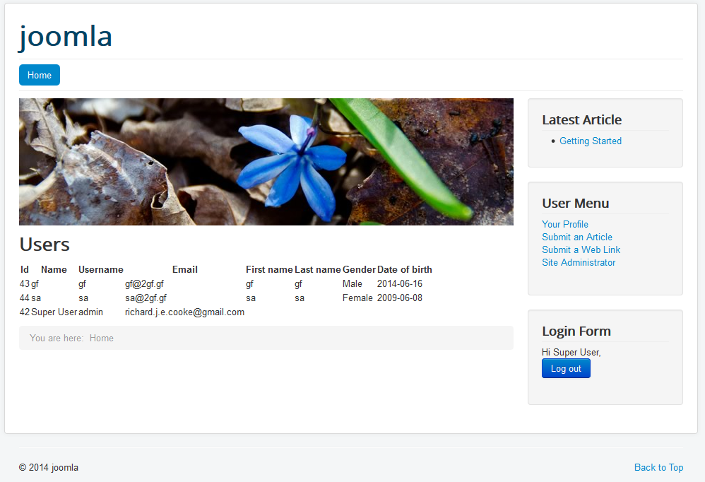
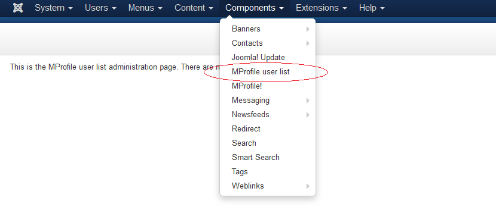

A friend made a poison control website in Joomla. He asked me if there was a way to collect user profile information and display it in a list. The best free plugin I could find for this is Malkesh's MProfile.
It has an admin page that allows you to add any fields you want to the user sign up page. Like this:
The problem is that Joomla can't display the users' custom fields. So I built a plugin to do it, using Biswarup's excellent tutorials on YouTube.
Here's what it looks like, completely unstyled: 
And here is the menu entry and empty settings page: 
It was my first time using PHP and Joomla and it took about 12 hours in total.
To download the component to use for Joomla or view the open source code, visit https://bitbucket.org/RichardCooke/mprofileuserlist.